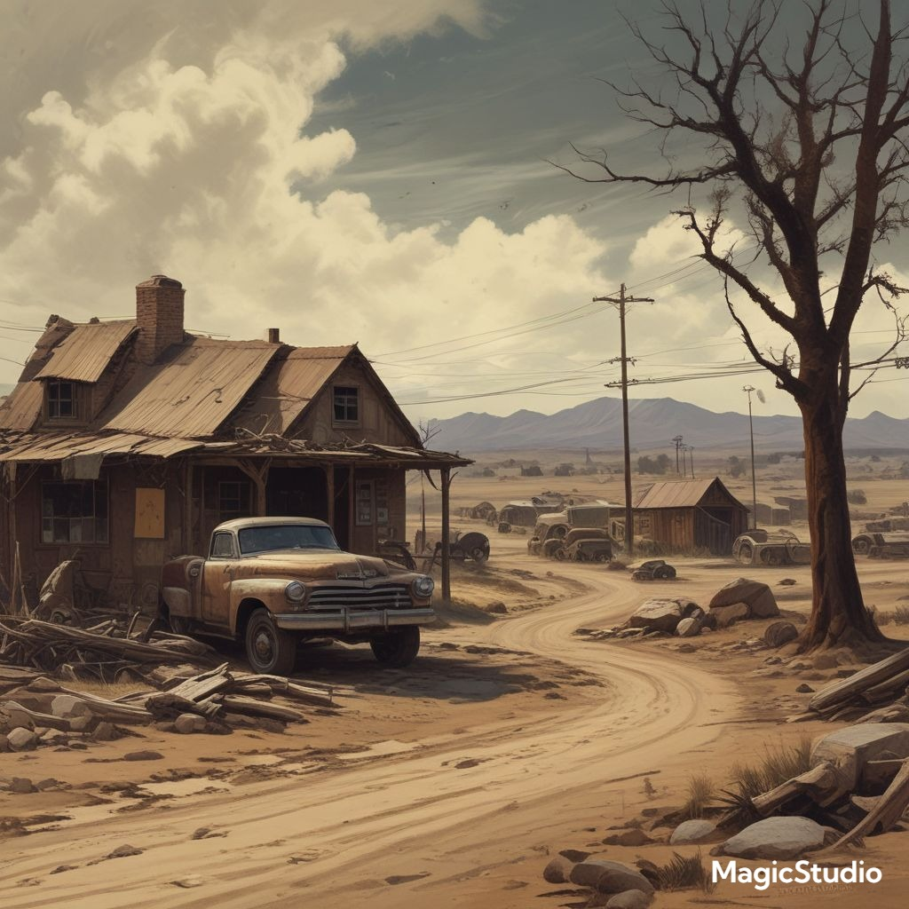

Mučilija
Ta država kot lahko vidite je zelo onesnažena zaradi izpušnih plinov. Je majhna, gosto naseljena država, znana po svoji zapuščeni infrastrukturi in okoljskih težavah. Življenje v Kabulu je težko – ulice so preplavljene z umazano vodo, smeti se kopičijo na vsakem vogalu, kanalizacija pa že dolgo ne deluje. Kljub temu se prebivalci trudijo preživeti v tem zahtevnem okolju.
Okolje:
Voda:
Voda v Mučiliji je večinoma onesnažena. Reke in potoki so temni, smrdeči in polni kemikalij ter odpadkov. Pitna voda je luksuz, ki si ga lahko privošči le peščica ljudi.
Smeti:
Na ulicah ni rednega odvoza smeti. Odpadki gnijejo na prostem, kar privablja škodljivce in poslabšuje že tako nezdrave življenjske razmere.
Zrak:
Zrak je poln dima iz kurjenja plastike, gume in drugih odpadkov, kar pogosto povzroča bolezni dihal.
Živalski svet
Mrtve ribe:
V ribnikih in rekah so pogosto vidne mrtve ribe, ki umirajo zaradi onesnaženja vode in pomanjkanja kisika.
Podgane:
Podgane so ena izmed najbolj razširjenih živali v Mučiliji . Najdemo jih v vsakem kotu – v kanalizaciji, med smetmi in celo v zapuščenih domovih.
Družba:
Ljudje v Mučiliji so odporni in iznajdljivi. Kljub težkim razmeram skušajo ohranjati skupnost in preživeti dan za dnem.
Nekateri posamezniki so se celo začeli organizirati in čistiti okolico v upanju, da bo prihodnost boljša – a borijo se proti sistemu, ki je že dolgo propadel.

Obsidion
To mesto je tudi zelo onesnaženo in tudi zaradi izpušnih pilnov in odpadkov. Izpušni plini povzročajo povišano Zemljino temperaturo to pomeni, da namesto da imamo 4 letne čase bomo imeli kmalu samo 2 (poletje in jesen).
Obsidian je ena najbolj onesnaženih držav na planetu. Nekdaj znana po svojih temnih, vulkanskih kamninah (od tod ime "Obsidian"), je danes sinonim za propad, smrad in okoljsko katastrofo.
Voda:
Voda v Obsidianu je skoraj povsod nepitna.
Reke so črne ali rjave, gosta brozga smrdi po kemikalijah in razpadajočem materialu.
Dež pogosto prinese kisle padavine, ki še dodatno uničujejo okolje in stavbe.
Smeti:
Smeti so povsod: ulice, trgi, reke, celo strehe hiš so prekriti z odpadki.
Nihče več ne ve, kdaj je nazadnje deloval javni sistem za odvoz odpadkov.
Ljudje se včasih preselijo preprosto zato, ker se smeti nakopičijo do vrat.
Živalski svet:
Obsidian je raj za podgane – in grob za vse ostale.
Mrtve ribe plavajo po rekah in jezerih, pogosto napihnjene in razpadle.
Ptic skoraj ni več – zastrupljene ali pregnane zaradi smrada.
Včasih se pojavijo mutirane živali, saj so kemikalije pustile posledice tudi na genetiki narave.
Družba in življenje:
Večina prebivalcev živi v revščini in brez upanja.
Vlada je skorumpirana in popolnoma ignorira okoljske ali socialne težave.
Edini "gospodarski razvoj" je v obliki tovarn brez filtrov, ki izvažajo poceni kovine in strupe.
Prebivalci:
Ljudje so utrjeni, ne zaupajo tujcem, vendar se znajo hitro organizirati, ko gre za preživetje.
Mnogi se zatekajo v podzemne barake in skladišča, da se izognejo slabemu zraku.
Otroci pogosto delajo na smetiščih in iščejo uporabne ostanke.
Zgodovina:
Obsidian je bil nekoč bogata rudarska država, znana po dragocenem črnem kamnu. Toda zaradi desetletij brez nadzora, požrešne industrije in izkoriščanja naravnih virov se je okolje popolnoma sesulo.
Ko je gospodarstvo propadlo, je prišlo do okoljskega kolapsa, sledi so bila lakota, bolezni in množično izseljevanje – tisti, ki niso uspeli oditi, zdaj životarijo med smetmi.
Politični sistem
Obsidian je uradno republika, vendar v resnici deluje kot diktatura.
Voditelj:
General Rovan Kruk, znan kot "Črni Guverner", je bil nekdanji vojaški poveljnik, ki je po državljanski vojni zagrabil oblast in nikoli več izpustil vajeti.
Ima osebno stražo, imenovano Senca, ki zatira vsak upor.
V javnosti se redko pojavi – kadar pa se, je vedno oblečen v črn vojaški plašč in nosi masko.
Prebivalci trdijo, da sploh ni več živ, ampak da ga v resnici nadomešča dvojnik ali umetna inteligenca.
Mesta in regije
1. Kora Velka (glavno mesto):
Popolnoma preplavljeno s smetmi.
V središču stoji Trdnjava Senca, vojaška baza in sedež oblasti.
Revni živijo v pločevinastih barakah, medtem ko elita prebiva na dvignjenih ploščadih, ločenih od umazanije.
2. Ruja Padla:
Nekdaj industrijsko središče, zdaj popolnoma opustošeno.
Zemlja je tako zastrupljena, da nič več ne raste.
Tam živi veliko mutantov in "Izbrisanih" – ljudi, ki jih je oblast uradno razglasila za mrtve.
Zdravje in bolezen
Zdravstvo v Obsidianu uradno obstaja, a deluje le za elito.
Navadni ljudje se zdravijo sami – z zelišči, starimi zdravili ali črnim trgom.
Najpogostejše bolezni: dihalne okužbe, kožne razjede, zastrupitve z vodo, in nenavadne mutacije.
Obstaja smrtonosna bolezen, imenovana Rjavka – koža potemni, razpoka, in človek umre v bolečinah. Vlada zanika njen obstoj.